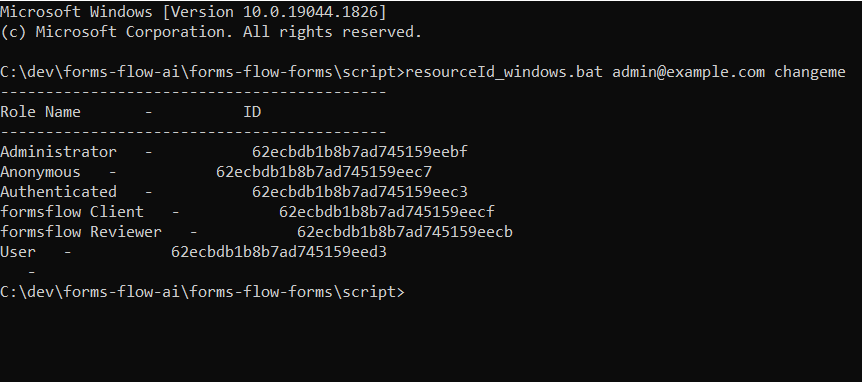

<article class="docs-article" id="section-1">
    <section class="docs-section" id="forms-flow-web">
        <div>
            <h1 id="formsflow-ai-web-application">formsflow.ai Web Application</h1>
            <hr>
            <p><strong>Formsflow.ai</strong> delivers progressive web application with React version
                <code>17.0.2</code> and <code>create-react-app</code>. Also currently uses <a
                    href="https://github.com/formio/formio">form.io</a> version <code>2.3.0</code>.
            </p>
            <p>A React library for rendering out forms based on the form.io platform.</p>
            <p>Also <strong>formsflow.ai</strong> provides a Vue.js based web user interface for
                easy integration of <strong>formsflow.ai with your existing UI based on
                    Vue</strong>. To know more details checkout
                <a
                    href="https://github.com/AOT-Technologies/forms-flow-ai-extensions/tree/master/camunda-formio-tasklist-vue">formsflow-ai-extension
                    repository</a>, which can be easily intergrated
                with your project by installing our <a
                    href="https://www.npmjs.com/package/camunda-formio-tasklist-vue">npm
                    package</a>.
            </p>
            <h2 id="prerequisites">Prerequisites</h2>
            <ul>
                <li>For docker based installation <a href="https://docker.com">Docker</a> need to be
                    installed.</li>
                <li>Admin access to a <a href="https://www.keycloak.org/">Keycloak</a> server. For
                    local development / testing follow <a href="local keycloak setup.html">Keycloak
                        installation</a>.</li>
                <li>Please make sure the <a href="Form Management Platform.html">Formio server</a>
                    is up and
                    running.</li>
            </ul>
            <h3 id="installation">Installation</h3>
            <ul>
                <li>Make sure you have a Docker machine up and running.</li>
                <li>Make sure your current working directory is
                    &quot;forms-flow-ai/forms-flow-web&quot;.</li>

                <li>Rename the file <strong> sample.env</strong> to <strong>.env</strong>.
                </li>
                <li>Modify the environment variables in the newly created <strong>.env</strong> file
                    if needed. Environment variables are given below.</li>


            </ul>

            <div>
                </img><br><br>
                    <br>
            <p>Getting ROLE_ID and RESOURCE_ID are mandatory for role based access. To generate ID follow the below steps 
            </p>
            <ul>
                <li>Goto <code>forms-flow-forms/script </code>directory</li><br>

                <h5>For windows</h5>
                <li>Open command prompt and run
                    <code>resourceId_windows.bat {user email} {password}</code> eg:
                    <code>resourceId_windows.bat admin@example.com changeme</code></li>
                <h5>For Linux</h5>
                <li>Open command prompt and run
                    <code>./resourceId_linux.sh {user email} {password}</code> eg:
                    <code>./resourceId_linux.sh admin@example.com changeme</code></li>
            </ul><br>
            </img>

        
            <p> Copy the ID corresponding to Role Name and paste it against the Environment Variable
                name from the below </p>
            </img><br><br>
                </img><br><br>
                <ul>


                    <div class="callout-block callout-block-info">
                        <div class="content">
                            <span class="callout-icon-holder me-1"></span>

                            <i class="fa fa-bullhorn"></i>

                            <strong>NOTE :</strong> <code>FORMIO_DEFAULT_PROJECT_URL</code>*
                            ,<code>FORMSFLOW_API_URL</code>* ,<code>CAMUNDA_API_URL</code>*,
                            <code>KEYCLOAK_URL</code>*
                            <br><br><p> While configuring USER_ACCESS_PERMISSIONS the
                            accessAllowApplications will hide / show application tab, the same way
                            accessAllowSubmissions does for viewSubmission button. To enable this
                            feature you need to add access-allow-applications, access-allow-submissions
                            with the respective user group in keycloak.</p>

                        </div>

                    </div>


                </ul><br>
                <br>
                <h3 id="running-the-application">Running the application</h3>
                <ul>
                    <li>forms-flow-web service uses port 5000, make sure the port is available.</li>
                    <li><code>cd {Your Directory}/forms-flow-ai/forms-flow-web</code></li>
                    <li>Run <code>docker-compose up -d</code> to start.</li>
                </ul>
                <p><em>NOTE: Use --build command with the start command to reflect any future
                        <strong>.env</strong> changes eg :
                        <code>docker-compose up --build -d</code></em></p>
                <h4 id="to-stop-the-application">To stop the application</h4>
                <ul>
                    <li>Run <code>docker-compose stop</code> to stop.</li>
                </ul>
                <h3 id="health-check">Health Check</h3>
                <ul>
                    <li>The application should be up and available for use at port defaulted to 3000
                        in
                        <a href="http://localhost:3000/">http://localhost:3000/</a>
                    </li>
                    <li>Default user credentials are provided <a
                            href="default user credential.html">here</a>.
                    </li>
                </ul>


            </div>
            </div>
        </section>
        </article>
